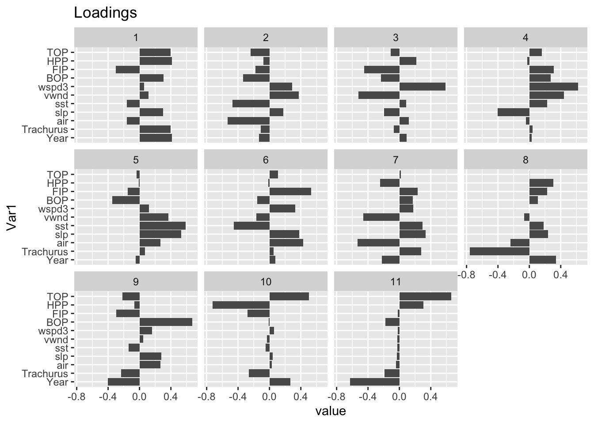
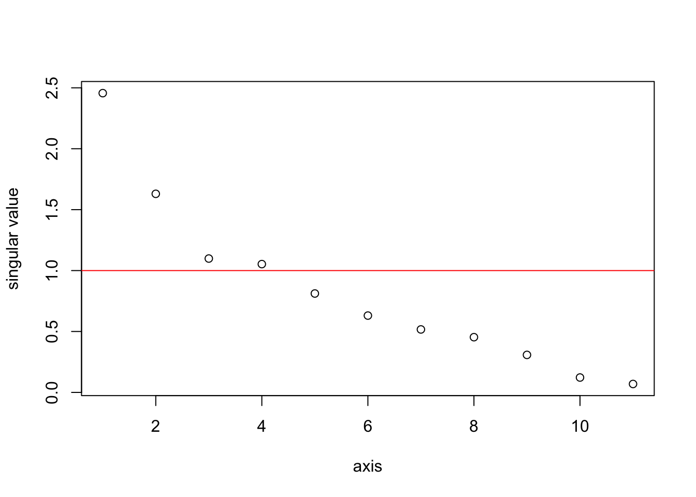
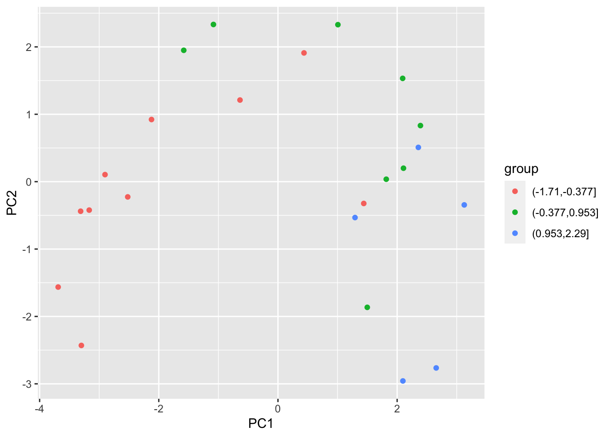
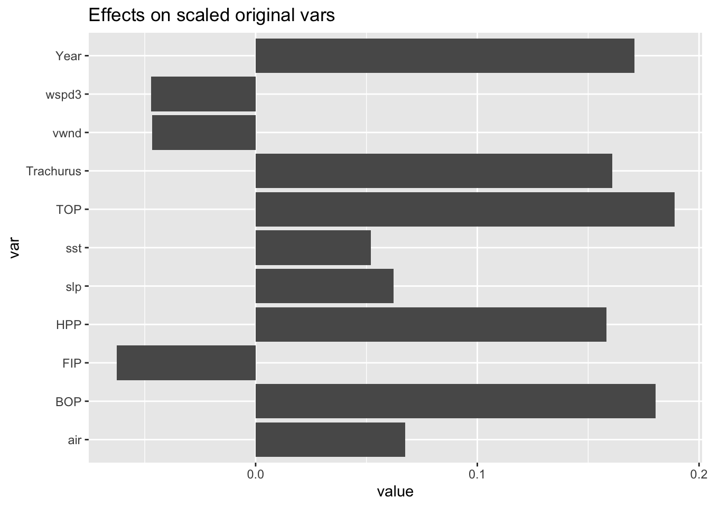

6.6 Orthogonalization
The last approach that we will discuss for dealing with collinearity is orthogonalization. With this technique, we replace the set of collinear covariates \(X\) with a set of orthogonal, i.e. independent, covariates \(Z\), which are linear combinations of the original, collinear, covariates. Principal Components Analysis (PCA) is an example of using orthogonalization to deal with collinear covariates. Another example is when we use the poly() function to do polynomial regression. In this case, we are replacing a set of collinear variates, \(x\), \(x^2\), \(x^3\), etc., with a set of orthogonal covariates.
The ways that you can create a set of orthogonal covariates is not unique. There are many different sets of orthogonal covariates. We will show three ways you might create your orthogonal set: PCA, Gram-Schmidt Orthogonalization, and residuals from linear regressions. Note, it is important to use standardized covariates with the mean removed and variance scaled to 1 when doing orthogonalization. Thus we will use dfz instead of df.
6.6.0.1 Principal component regression
Principal component regression is a linear regression in which you transform your collinear covariates using the othogonal variates created by Principal Components Analysis (PCA). PCA uses an orthogonal set of variates \(Z\) in which the first variate accounts for as much of the variability in the variate dataset as possible, the second accounts for as much of the remaining variance as possible, the third accounts for as much of the variance remaining after the first two, etc., etc. Each variate is orthogonal to the preceding variate.
Singular value decomposition is a standard way to compute \(Z\) for PCA.
\[Z = XV\] where \(V\) is the right singular vector from the singular value decomposition of the matrix of covariates (\(X=UDV'\)). The \(V\) is the ‘loadings’ matrix in a PCA. The orthogonal covariates \(Z\) are linear combinations of the original, collinear, covariates. PCA covariates have the nice feature that they are ordered in terms of the amount of variance they explain, but the orthogonal variates, called axes in a PCA, can be a bit hard to interpret.
Let’s see an example with our data set. First we will create a matrix of our collinear variates. We need to use the scaled variates.
We create our orthogonal PCA variates using the svd() function which does a singular value decomposition. We will re-label the variates as ‘principal components (PC)’. A corrplot shows that our variates are now uncorrelated.
loadings <- svd(X)$v
rownames(loadings) <- colnames(X)
Z <- X%*%loadings
colnames(Z) <- paste0("PC", 1:ncol(Z))
corrplot(cor(Z))These new variates are linear combinations of the original variates. The “loadings” indicate the weight of each original variate in the new variate (“principal component”).
library(reshape2)
meltR = melt(loadings)
ggplot(meltR, aes(x=Var1, y = value)) +
geom_bar(stat="identity") +
coord_flip() +
facet_wrap(. ~ Var2) +
ggtitle("Loadings")
The \(Z\) matrix gives us a set of orthogonal variates, but some of them do not explain much of the variance. We know this should be the case because we have collinearity in our data. The singular values (which are square root of the eigenvalues of \(X^\top X\)) show how much of the variance in \(X\) explained by each pricipal component (column in \(Z\)). In the plot, the singular values were of \(X/\sqrt{n}\) so that \(X^\top X\) is the correlation matrix. The average singular value for a correlation matrix is 1. With this scaling, any singlular value much less than one is small.
sing.val <- svd(X/sqrt(n))$d
plot(sing.val, xlab="axis", ylab="singular value")
abline(h=1, col="red")
We could run a linear regression with all the 11 orthogonal variates (principal components), but that would not be helpful. The point of orthogonalization is to find a smaller set of variates that explains the structure in the larger set of collinear variates. Based on the singular value plot, we will use the first 2 components. These 2 capture a fair bit of the variability in the anchovy catch.
dfpca <- data.frame(anchovy=dfz$anchovy, Z[,1:2])
pcalm <- lm(anchovy ~ ., data=dfpca)
summary(pcalm)##
## Call:
## lm(formula = anchovy ~ ., data = dfpca)
##
## Residuals:
## Min 1Q Median 3Q Max
## -1.0413 -0.4149 0.1160 0.4328 0.8402
##
## Coefficients:
## Estimate Std. Error t value Pr(>|t|)
## (Intercept) 6.209e-15 1.166e-01 0.000 1.00000
## PC1 3.405e-01 5.090e-02 6.688 1.65e-06 ***
## PC2 -2.278e-01 7.671e-02 -2.970 0.00757 **
## ---
## Signif. codes: 0 '***' 0.001 '**' 0.01 '*' 0.05 '.' 0.1 ' ' 1
##
## Residual standard error: 0.5592 on 20 degrees of freedom
## Multiple R-squared: 0.7281, Adjusted R-squared: 0.7009
## F-statistic: 26.78 on 2 and 20 DF, p-value: 2.209e-06We can also plot the anchovy catch, broken into small, medium, and large, against the 2 components and see that the 2 components do separate these broad catch levels.
library(ggplot2)
library(grid)
library(gridExtra)
df_pca <- prcomp(X)
df_out <- as.data.frame(df_pca$x)
df_out$group <- cut(dfz$anchovy,3)
p<-ggplot(df_out,aes(x=PC1,y=PC2,color=group ))
p<-p+geom_point()
p
We can recover the effect sizes for the original variates from \(V\tilde{\beta}\). This gives a similar picture as the other methods we used. Year, TOP/HPP/BOP and Trachurus come out as important.
## (Intercept) PC1 PC2
## 6.209379e-15 3.404684e-01 -2.278441e-01eff <- data.frame(value=svd(X)$v[,1:2] %*% coef(pcalm)[-1], var=colnames(X))
ggplot(eff, aes(x=var, y = value)) +
geom_bar(stat="identity") +
coord_flip() +
ggtitle("Effects on scaled original vars")
Principal Components Regression (PCR) is a method for dimension reduction, like Lasso regression or variable selection, but your new principal components can be hard to interpret because they are linear combinations of the original variates. In addition, if you are trying to understand if a particular variate improves your model, then PCR is going to help you. Another approach for creating orthogonal variates is Gram-Schmidt orthogalization and this can help study the effect of adding specific variates.
6.6.0.2 Gram-Schmidt Orthogonalization
The Gram-Schmidt orthogonalization treats the variates in a specific order. The first orthogonal variate will be the first variate, the second othogonal variate will be the variation in the second variate that is not explained by the first, the third will be the variation in the third variate that is not explained by the first two, etc. This makes your orthogonal variates easier to interpret if they have some natural or desired ordering. For example, let’s say we want to study if adding TOP to our model help explain variance over what is already explained by Year. Putting both TOP and Year in a model won’t be helpful because they are highly correlated and we’ll just get effect sizes that offset each other (one negative, one positive) with high standard errors. Instead, we’ll add Year and then add a second variate that is the variability in TOP that is not explained by Year. Why not add TOP first? The ordering is up to you and depends on the specific question you are asking. In this case, we asking what TOP adds to a model with Year not what Year adds to a model with TOP.
We create the Let \(Z\) be the matrix of orthogonal variates and \(X\) be the matrix of original, collinear, covariates. The first column of \(Z\) is \(Z_1 = X_1\). The second column of \(Z\) is \[Z_2 = X_2 - Z_1(Z_1^\top Z_1)Z_1^\top X_2.\] The third column of \(Z\) is \[Z_3 = X_3 - Z_1(Z_1^\top Z_1)Z_1^\top X_3 - Z_2(Z_2^\top Z_2)Z_2^\top X_3.\]
Here is R code to create the first 3 columns of the Z matrix. The cross-product of Z is diagonal, indicating that our new variates are orthogonal.
pr <- function(y, x){ x%*%solve(t(x)%*%x)%*%t(x)%*%y }
Z <- cbind(X[,1], 0, 0)
Z[,2] <- X[,2] - pr(X[,2], Z[,1])
Z[,3] <- X[,3] - pr(X[,3], Z[,1]) - pr(X[,3], Z[,2])
zapsmall(crossprod(Z))## [,1] [,2] [,3]
## [1,] 23 0.000000 0.0000
## [2,] 0 6.757089 0.0000
## [3,] 0 0.000000 22.1069To create our orthogonal variates, we have to give some thought to the ordering. Also not all the variates in our example are collinear. So we don’t need to do Gram-Schimdt Orthogonalization on all the variates. From the variance inflation factors, Year, HPP, TOP, BOP and Trachusus have the worst collinearity problems.
## Year Trachurus air slp sst vwnd wspd3
## 103.922970 18.140279 3.733963 3.324463 2.476689 2.010485 1.909992
## BOP FIP HPP TOP
## 13.676208 8.836446 63.507170 125.295727We’ll do Gram-Schmidt orthogonalization on these 5. First let’s resort our variates to put these 5 first.
pr <- function(y, x){ x%*%solve(t(x)%*%x)%*%t(x)%*%y }
Z <- X[,c("Year","BOP","HPP","TOP","Trachurus","FIP","air","slp","sst","vwnd","wspd3")]
Z[,2] <- X[,2] - pr(X[,2], Z[,1])
Z[,3] <- X[,3] - pr(X[,3], Z[,1]) - pr(X[,3], Z[,2])
zapsmall(crossprod(Z))## Year BOP HPP TOP Trachurus FIP
## Year 23.000000 0.000000 0.000000 21.489875 19.328398 -13.995187
## BOP 0.000000 6.757089 0.000000 2.743112 6.757089 -0.836240
## HPP 0.000000 0.000000 22.106900 2.906483 0.000000 7.049420
## TOP 21.489875 2.743112 2.906483 23.000000 20.802454 -9.247200
## Trachurus 19.328398 6.757089 0.000000 20.802454 23.000000 -12.597306
## FIP -13.995187 -0.836240 7.049420 -9.247200 -12.597306 23.000000
## air -3.834139 -1.309927 22.106900 -1.207694 -4.532004 9.544555
## slp 12.722819 3.030045 -6.167315 11.179809 13.721858 -12.356850
## sst -5.105424 -0.381354 14.974748 -1.749126 -4.671774 8.493349
## vwnd 2.278039 2.424582 -11.802674 3.176227 4.338966 -1.073977
## wspd3 2.219684 -0.922046 -6.961443 -0.226925 0.943299 -5.505128
## air slp sst vwnd wspd3
## Year -3.834139 12.722819 -5.105424 2.278039 2.219684
## BOP -1.309927 3.030045 -0.381354 2.424582 -0.922046
## HPP 22.106900 -6.167315 14.974748 -11.802674 -6.961443
## TOP -1.207694 11.179809 -1.749126 3.176227 -0.226925
## Trachurus -4.532004 13.721858 -4.671774 4.338966 0.943299
## FIP 9.544555 -12.356850 8.493349 -1.073977 -5.505128
## air 23.000000 -8.875634 15.899760 -12.652455 -7.152721
## slp -8.875634 23.000000 -9.371464 7.341141 -1.298503
## sst 15.899760 -9.371464 23.000000 -7.755410 -3.926768
## vwnd -12.652455 7.341141 -7.755410 23.000000 4.991220
## wspd3 -7.152721 -1.298503 -3.926768 4.991220 23.000000